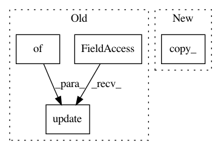

c7d58033db0e25736d33406ed262cb5232d366e8,src/sdk/pynni/nni/compression/torch/pruners.py,AGP_Pruner,calc_mask,#AGP_Pruner#Any#Any#,88
Before Change
freq = config.get("frequency", 1)
if self.now_epoch >= start_epoch and self.if_init_list.get(op_name, True) \
and (self.now_epoch - start_epoch) % freq == 0:
mask = self.mask_dict.get(op_name, {"weight": torch.ones(weight.shape).type_as(weight)})
target_sparsity = self.compute_target_sparsity(config)
k = int(weight.numel() * target_sparsity)
if k == 0 or target_sparsity >= 1 or target_sparsity <= 0:
return mask
// if we want to generate new mask, we should update weigth first
w_abs = weight.abs() * mask
threshold = torch.topk(w_abs.view(-1), k, largest=False)[0].max()
new_mask = {"weight": torch.gt(w_abs, threshold).type_as(weight)}
self.mask_dict.update({op_name: new_mask})
self.if_init_list.update({op_name: False})
else:
new_mask = self.mask_dict.get(op_name, {"weight": torch.ones(weight.shape).type_as(weight)})
return new_mask
After Change
w_abs = weight.abs()
threshold = torch.topk(w_abs.view(-1), k, largest=False)[0].max()
new_mask = {"weight": torch.gt(w_abs, threshold).type_as(weight)}
if_calculated.copy_(torch.tensor(1)) // pylint: disable=not-callable
return new_mask
In pattern: SUPERPATTERN
Frequency: 3
Non-data size: 4
Instances
Project Name: Microsoft/nni
Commit Name: c7d58033db0e25736d33406ed262cb5232d366e8
Time: 2020-02-09
Author: 38930155+chicm-ms@users.noreply.github.com
File Name: src/sdk/pynni/nni/compression/torch/pruners.py
Class Name: AGP_Pruner
Method Name: calc_mask
Project Name: Microsoft/nni
Commit Name: 4e21e721a65d0ac7c8465c6b7842dd39338bb3d0
Time: 2020-02-09
Author: 656569648@qq.com
File Name: src/sdk/pynni/nni/compression/torch/pruners.py
Class Name: LevelPruner
Method Name: calc_mask
Project Name: Microsoft/nni
Commit Name: d452a1665f802bfbe75372b6c942272b252c70a2
Time: 2020-02-05
Author: Quanlu.Zhang@microsoft.com
File Name: src/sdk/pynni/nni/compression/torch/pruners.py
Class Name: LotteryTicketPruner
Method Name: prune_iteration_start